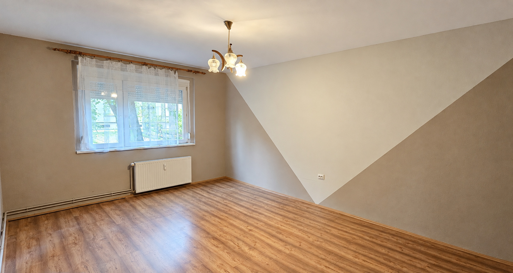

PÉCS · URÁNVÁROS · VERESS ENDRE UTCA
Uránvárosi
otthon.
50 m², két külön nyíló szoba, földszinti elhelyezkedés. A Veress Endre utcai lakás digitálisan rendezett forrásképei és saját szemléltető térmodellje.
A hirdetés szerint saját tároló, szigetelt társasház, cserélt nyílászárók és egyedi mérős távfűtés. Az üres szobák a bemutatóban is üresek maradnak.

01 · MOZGÓKÉP
Rendezett képek filmje
36 másodperc a lakás saját rendezett képeiből; a közös lépcsőház fotói külön épületrészt mutatnak.
01B · 3D KÖRBEJÁRÁS
Egy kör a lakás körül,
majd közelebb.
48 másodperces saját 3D-körbejárás: az áttekintő körben a falak elrejtésével látható az elrendezés, majd négy közeli jelenet mutatja a teljes helyiségeket. A közös lépcsőház nem része a lakásmodellnek.
02 · INTERAKTÍV TÉR
Lépj közelebb
a részletekhez.
SZEMLÉLTETŐ TÉRMODELL · NEM FELMÉRÉS
Fotók és eredeti alaprajz alapján készült. Az áttekintő nézetben a falak és a hozzájuk rögzített elemek rejtettek; a közeli nézetekben visszaállnak. A fehér háromszögfestés, sárga szoba, konyha és fürdő felismerhető részletei megmaradnak; ajtólapok nélkül.
A 3D csak indítás után töltődik be. A megjelenített állókép saját render, nem ingatlanfotó.
Egér / érintés: húzás és zoom · Billentyűzet: nyilak, + / −, Home · A részletek gombokkal is elérhetők.
03 · FOTÓGALÉRIA
Saját forrásképek
Kilenc saját forráskép: a lakás képei, két külön jelölt közös lépcsőházi nézet és az alaprajz. A fotók AI-val retusált, digitálisan rendezett változatai láthatók.
04 · ÁTLÁTHATÓ FORRÁSOK
Saját képek és jelölt feltételezések.
- Saját kiinduló hirdetés
- 50 m², két külön nyíló szoba, földszinti elhelyezkedés. A Veress Endre utcai lakás digitálisan rendezett forrásképei és saját szemléltető térmodellje. A hirdetés szerint saját tároló, szigetelt társasház, cserélt nyílászárók és egyedi mérős távfűtés. Az üres szobák a bemutatóban is üresek maradnak.
- Képi források
- Kilenc saját forráskép: a lakás képei, két külön jelölt közös lépcsőházi nézet és az alaprajz. A fotók AI-val retusált, digitálisan rendezett változatai láthatók.
- Film és modell
- 36 másodperc a lakás saját rendezett képeiből; a közös lépcsőház fotói külön épületrészt mutatnak. Fotók és eredeti alaprajz alapján készült. A fehér háromszögfestés, sárga szoba, konyha és fürdő felismerhető részletei megmaradnak; ajtólapok nélkül.
- Forráskorlátok
- A 06/08 közös lépcsőház nem lakáson belüli lépcső. A méretek és rejtett részletek szemléltető feltételezések. A hirdetési műszaki adatok a poszt állításai.
- Digitális képrendezés
- A márkajelzés és alkalmi rendetlenség eltávolítása, részletjavítás. A bemutató szerkesztett képeket használ; az eredeti források változatlanul megmaradtak.